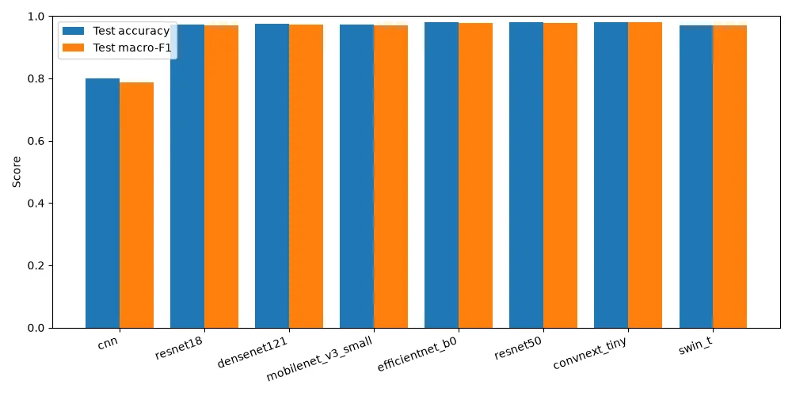

Case study / 05Europe · Sentinel-2 · 2026
Deep learning for remote sensing · MLRS mini project
Eight models,
one split.
Does transfer learning really beat a small CNN on satellite scenes? A controlled comparison of eight architectures on EuroSAT, with identical splits and training settings, and the caveats stated up front.
See the results
01 / Situation
One variable
at a time.
Land-cover inventories still lean on manual interpretation. Before asking which architecture is best, this project fixes everything else: the same stratified split, optimiser, schedule and early-stopping rule, so differences come from the model.
27,000 patches
land-cover scenes
stratified, seed 42
02 / Approach
Fair comparison,
by construction.
- 01
Fix the experiment
One saved 18,900 / 4,050 / 4,050 split (splits.json), AdamW at 3e-4, batch 64, at most 20 epochs, early stopping on validation macro-F1 with patience 5, flips as the only augmentation.
- 02
Compare like with like
A compact three-convolution CNN trained from scratch (94,538 parameters) against seven fine-tuned ImageNet backbones: ResNet-18, ResNet-50, DenseNet-121, MobileNetV3-Small, EfficientNet-B0, ConvNeXt-Tiny and Swin-T.
- 03
Select honestly
Models are chosen on validation macro-F1 and the test set is evaluated once. Per-class precision, recall and F1, confusion matrices, learning curves and a majority-class baseline (11.1%) accompany every run.
03 / Results
Pretraining
is the story.
80.1%
test accuracy for the CNN trained from scratch (macro-F1 0.787)
98.1%
highest test accuracy: ConvNeXt-Tiny (macro-F1 0.981)
97.2%
MobileNetV3-Small, with 1.5 M parameters trained in 6.3 minutes
+17 pts
gap between scratch training and the weakest pretrained model
Validation picked EfficientNet-B0 (validation macro-F1 0.983, test accuracy 97.95%), not the test-set leader. That is the point of selecting on validation. More than half of its remaining errors are vegetation look-alikes: 48 of its 83 mistakes are confusions among AnnualCrop, HerbaceousVegetation, PermanentCrop, Pasture and Forest.
| Model | Accuracy | Macro-F1 | Parameters | Train min |
|---|---|---|---|---|
| Compact CNN (scratch) | 0.8005 | 0.7872 | 94,538 | 10.5 |
| ResNet-18 | 0.9723 | 0.9714 | 11.2 M | 8.4 |
| DenseNet-121 | 0.9746 | 0.9732 | 7.0 M | 18.4 |
| MobileNetV3-Small | 0.9723 | 0.9713 | 1.5 M | 6.3 |
| EfficientNet-B0 (validation pick) | 0.9795 | 0.9786 | 4.0 M | 10.4 |
| ResNet-50 | 0.9795 | 0.9788 | 23.5 M | 13.5 |
| ConvNeXt-Tiny (test leader) | 0.9810 | 0.9805 | 27.8 M | 17.1 |
| Swin-T | 0.9696 | 0.9691 | 27.5 M | 12.9 |

04 / Data & method
Reproducible
by design.
Each run saves its configuration, split manifest, learning curves, predictions and checkpoint, so every number on this page can be traced to a file.
- Dataset
- EuroSAT RGB (Sentinel-2 derived)
- Framework
- PyTorch · torchvision
- Hardware
- NVIDIA GPU, CUDA 12.6
- Metrics
- Accuracy · macro-F1 · per-class P/R/F1
- Outputs
- Checkpoints · splits · configs · report
05 / Limits & honesty
What it does
not claim.
The comparison’s own write-up says this directly:
- One seed and an image-level split: nearby or visually related patches can sit in both train and test, so scores are optimistic.
- The seven pretrained models span 97.0–98.1%, about 46 images out of 4,050. A single seed cannot rank them.
- Only the CNN is trained from scratch, so pretraining and architecture effects are confounded.
- 64 × 64 RGB patches over Europe: no geographic holdout, no multispectral bands, and no claim about India.